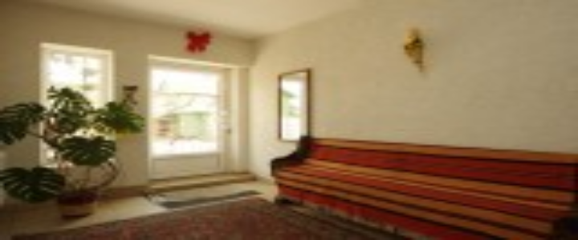
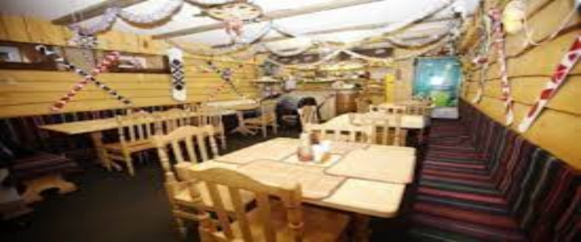

Готель "Могул"


Приватний житло-готель «МОГУЛ» розташований у мальовничій історичній місцевості у центрі Ворохти (30-40 місць, 20км від гірськолижного курорту «Буковель», доїзд до гірськолижних трас швидкий і зручний). Тут цікаво влітку
та взимку.
Суттєвою перевагою розташування є наявність розвинутої туристичної і відпочинкової інфраструктури, пристосованої до будь-якої пори року, а також близкість гори Говерла для літнього сходження. Проживання в дерев'яних комфортабельних
одно- чи двокімнатних номерах зі всіма вигодами. Зручне автопаркування. У кожному номері є супутникове телебачення, WI-FI, електрочайник, холодильник. У будинку є технічна кімната для прасування речей, кафе, прокатний пункт. Поряд вокзал, банк,
банкомат, мережа магазинів для активного шопінгу, сауна, ресторан "Стара Ворохта".
В готелі можна замовити сніданок, обід і вечерю, оформити прокат гірськолижного спорядження чи велосипедів. Можна скористатися послугами інструктора, провідника за грибами та ягодами, гіда, таксі.
| Місяць | 01 | 02 | 03 | 04 | 05 | 06 | 07 | 08 | 09 | 10 | 11 | 12 |
| Велика кімната (3-5 людей) | 750 | 400 | 350 | 250 | 300 | 250 | 300 | 250 | 240 | 240 | 240 | 350 |
| Мала кімната (1-2 людини) | 450 | 250 | 250 | 150 | 180 | 150 | 150 | 180 | 120 | 120 | 120 | 250 |